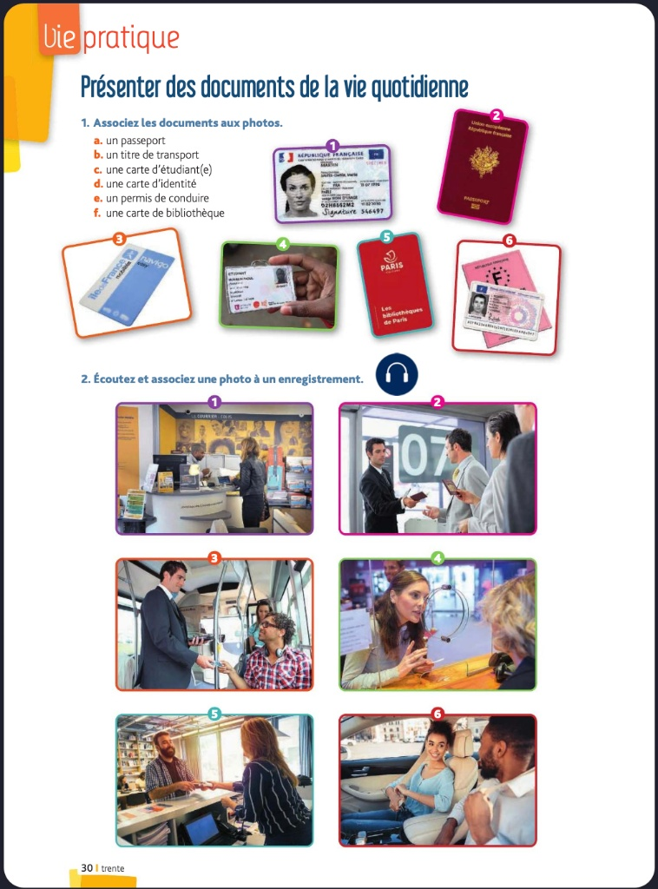
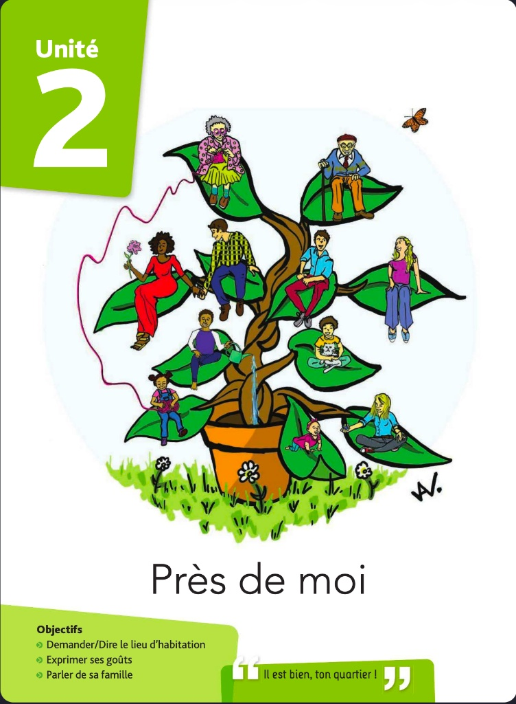
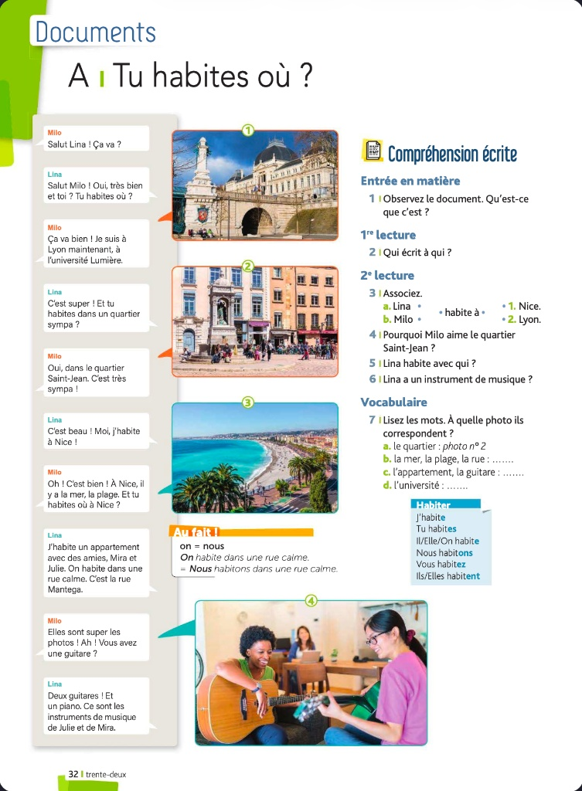

Repaso: Les Nationalités
Conceptos Clave
- Masculin → Féminin : on ajoute un -e (français → française)
- Si le masculin termine en -e, ça ne change pas (suisse → suisse)
- Masculin en -ien → Féminin en -ienne (canadien → canadienne)
Exercice: Masculin ou Féminin?
Vie Pratique: Documents d'identité
Observons les documents de la vie quotidienne.

Contexte Canadien
En Canadá, los documentos más comunes que te pedirán son:
- Le permis de conduire (Licencia de conducir): Es la identificación principal en la vida diaria.
- La carte d'assurance maladie (Tarjeta de seguro médico): Esencial para cualquier cita médica. Cada provincia tiene la suya (RAMQ en Québec, OHIP en Ontario).
- Le passeport: Para asuntos federales e internacionales.
Exercice: Compréhension Orale
Écoute et associe chaque dialogue (A, B, C, D, E, F) à une situation ci-dessous.
Unité 2: Près de moi

Qu'est-ce qu'on voit dans l'image ? (Haz clic para ver)
- Des gens (personas)
- Un arbre (un árbol)
- Un pot (una maceta)
- Des feuilles (hojas)
- Un papillon (una mariposa)
- Une grand-mère et un grand-père (abuelos)
A | Tu habites où?

Note: "On" vs "Nous"
En francés, `on` y `nous` significan "nosotros".
- `Nous` es formal y se usa principalmente al escribir. Se conjuga con `-ons`: `Nous habitons`.
- `On` es muy común al hablar, es más informal. ¡Se conjuga como `il/elle`!: `On habite`.
- En Canadá, escucharás `on` el 99% del tiempo en conversaciones cotidianas.
Production Orale: Phrases utiles
Para el ejercicio de "Production orale", puedes usar estas frases adaptadas a un contexto canadiense:
- Où tu restes? (Forma muy quebequense de decir "Où tu habites?")
- Je reste dans le quartier du Plateau, à Montréal.
- C'est un quartier le fun! (le fun = sympa, cool)
- J'habite dans un condo / un appart.
Le français québécois: L'accent
Comprendre les différences
El acento de Québec es muy particular. Una de las diferencias más notables es cómo suenan las vocales. ¡Escuchemos para aprender a reconocerlo!